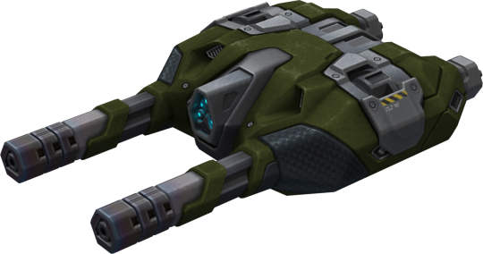
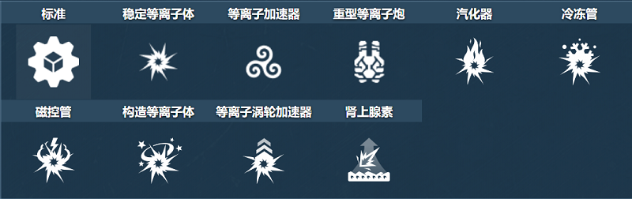
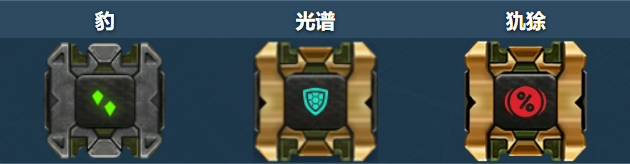
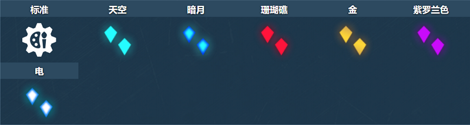
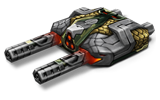
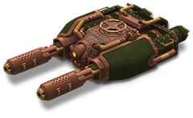

概括
离子炮的最远有效射程在 60 到 80 米之间（取决于修改），
由无限数量的射弹和快速射速提供支持。
由于这种无限的电力供应，这种武器在提供压制火力方面是首屈一指的，
许多使用这款炮塔的用户都让 DM 大发雷霆。
拥有游戏中两种基于等离子武器之一的名称（另一种是火龙珠），
射程不一定是在它的一边，但它可以在中型地图中拥有自己的小掩体。
车库中的描述
双管炮塔，射程小。具有非常快的射击速度，但飞行速度很慢。
它的射击爆炸会伤害你自己，在近距离使用炮塔时要非常小心。
快速射击和双倍等离子桶将立即将您的敌人变成金属熔炉。
这种武器非常适合中短程的动态战斗，但由于等离子射击不稳定，你应该避免在靠近目标的地方发射炮塔。
如果没有适当的安全措施，您很容易将自己的水箱熔化。
等离子充电器和电容器充电的冷却系统设计得非常防故障
以至于一些油轮设法将不同的有问题的物体放在点火触发器上，以不间断地点火。
正因为如此，一些专家将炮塔射击的声音描述为额外的破坏因素，这不仅会惹恼敌人，也会惹恼队友。
装备改造

防御模块

射击效果

皮肤

离子炮标准

离子炮 XT

离子炮蒸汽朋克